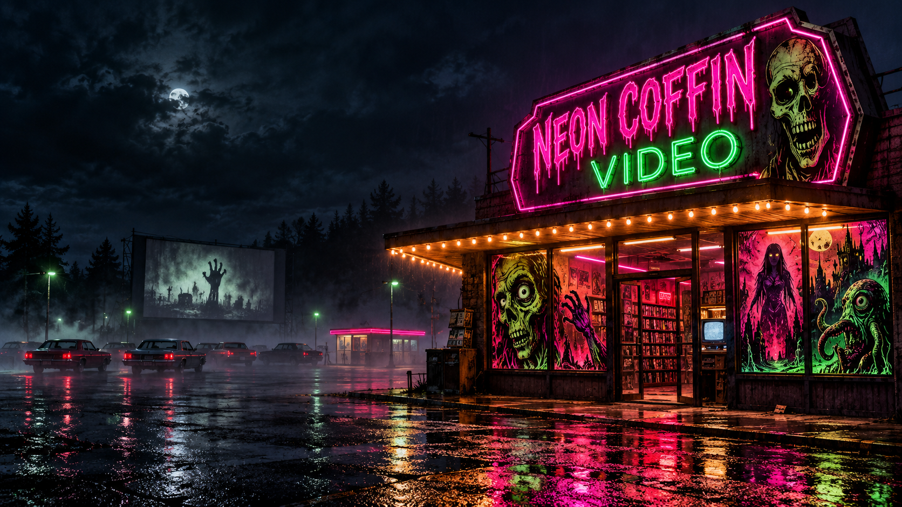
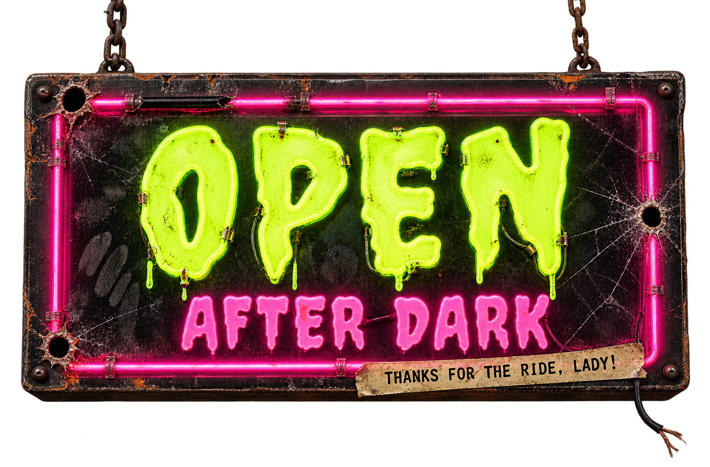
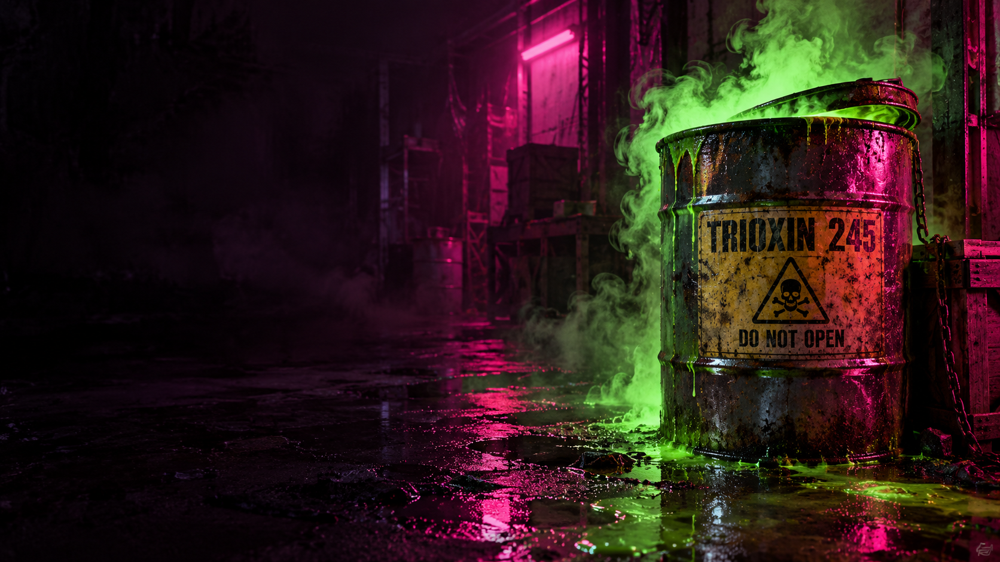
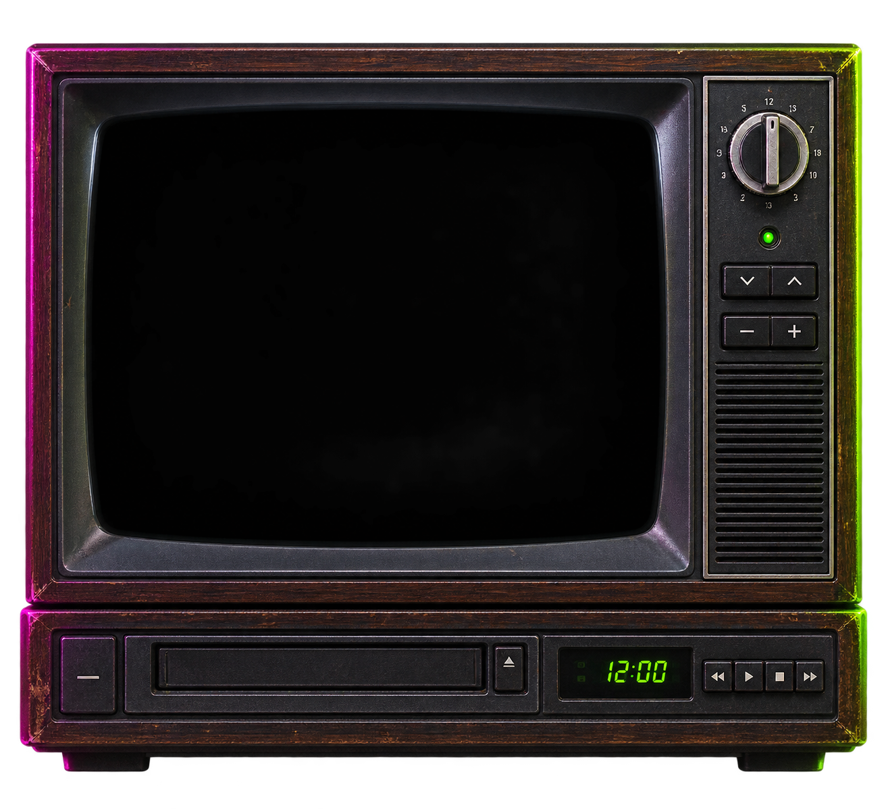

THE AMUSEMENT PIER
Some nights, the music plays after midnight. He remembers the fire and rents a tape of opening day.

YOUR AFTER-HOURS HORROR HANGOUT
Rubber monsters. Mad scientists. Beautifully bad decisions.
Pull up a chair. The late show is just getting started.
UPDATING FROM THE MIDNIGHT COUNTER / NO VISITOR PROFILES

RUBBER MONSTERS AFTER MIDNIGHT ✦ MAD SCIENCE, BAD DECISIONS ✦ MALL MAYHEM
🎃 OCTOBER AT NEON COFFIN / THE HALLOWEEN COUNTER
THE NIGHT HE
CAME HOME…
THE BABYSITTER IS NEVER SAFE.
Porch lights. Carved pumpkins. Something waiting across the street. Start in Haddonfield, then follow the flickering televisions, haunted records, and parties that should have ended hours ago.
The original Halloween through Part V. Five October companions.
Pick a tape. Keep the porch light on.
📼 THE NIGHT MANAGER’S ROTATING RENTALS
NEW PICKS EVERY 12 HOURS
🎞️ THE PROJECTIONIST’S PICK
Two tapes from the night manager.
A fresh double bill every twelve hours.
Start with Herbert West’s questionable bedside manner. Follow it with a college campus that has a serious slug problem. A pairing for people who like their science messy and their monsters handmade.

☣️ WAREHOUSE PICK / CONTAINMENT FAILURE
Five tapes. One spectacularly bad idea.
The Return of the Living Dead collection — from warehouse punk to rave-night carnage.
🧟 TRIOXIN 245 / THE COMPLETE FIVE-TAPE FILE
KEEP THE BARREL CLOSED.
📺 THE LATE SHOW / FRIDAY NIGHT FRIGHTS
Official watch links, previews, and this week’s Midnight Lounge question.
🌊 SOUTHERN MAINE / TAKE THE OLD COAST ROAD
Neon Coffin Video sits down the old coast road in Harrow Point, a fog-bound town on the southern Maine coast. The Night Manager grew up near Boston; the Massachusetts accent came north with him.
Some nights, the music plays after midnight. He remembers the fire and rents a tape of opening day.
The old cemetery looks down over the town and the dark water beyond it.
The town’s old mortuary, where the coast road bends away from the water.
Everyone has a place here. No one remembers how they arrived.
Weekly notices, missing travelers, and a monthly column that prints what the town forgets.
Harrow Point and its landmarks are fictional Neon Coffin Video lore, set near Old Orchard Beach and inspired by the history and folklore of coastal Maine. Read the town board in the Midnight Lounge ↗
🎬 COMING ATTRACTIONS / THE COUNTER TV
A battered television. A stack of trailers.
Some things never needed an upgrade.
🗝️ PREVIEWS FROM THE VAULT
Switch tapes. Hit play. Official trailers from the films on our shelves.
Trailers play on request through YouTube. If a studio disables embedding, use the direct link.
⚠️ PLEASE HANDLE WITH QUESTIONABLE CARE
Pick an aisle. Pull a small stack.
The whole crypt, without the endless scroll.
No tapes on this shelf. Try another title or category.
🔦 THE BACK ROW / RENTAL-ERA DEEP CUTS
The loud, strange, low-budget tapes that made late-night video-store browsing an adventure. Includes two 1990 aftershocks that still feel like the last row of the 80s rack.
THE CITY HAS A BASEMENT
SMALL FIGURES. BAD INTENTIONS.
THE NEIGHBORS ARE NOT THEMSELVES
SOMETHING IN THE MIST
THE CARNIVAL KNOWS YOUR WISH
FEAR HAS A NEW ADDRESS
LAST STOP: THE MASKED KILLER
STAY FOR THE LAST SHOW
MIND OVER MATTER
BACKYARD PORTAL
LOVE. ROBOTICS. REANIMATION.
A WILDNESS UNDER THE SKIN
NO LOVE LOST
THE ORIGINAL PHONE CALL
THE DEVIL IN THE DETAILS
SOMETHING IS IN THE ROOM
THE HOUSE REMEMBERS
THE HOUSE STILL HAS ROOM
THE BOTTLE SHOP IS OPEN
LAST CALL AT THE AFTERHOURS CLUB
SLUG LIFE
ONE MODEM. SEVEN DEMONS.
DON’T ADJUST THE SET
THAT’S NOT CRANBERRY SAUCE
HEAVY METAL. HEAVIER DEMONS.
THE HOUSE WANTS YOU
THE MORGUE HAS A DOOR
PARTNER. CORPSE. POLICE ISSUE.
THE BASEMENT IS BREEDING
TONIGHT’S SPECIAL: CHAOS
DO NOT PLAY THE TAPE
THE COMPUTER KNOWS THE RITUAL
FALL BREAK / BAD IDEA
ORIGINAL NEON COFFIN SLEEVE ART / SELECT A TAPE TO OPEN ITS DOSSIERSEARCH THE FULL ARCHIVE ↗
🩸 THE PEOPLE BEHIND THE DAMAGE
Six fingerprints on the rental counter.
Pick a name. Pull their tapes.
🏷️ VIDEO LABELS / SLEEVE NOTES
Troma’s beautiful chaos, Anchor Bay’s collector legacy,
and Italian horror’s blood-red midnight cinema.
🎟️ TWO FEATURES. ZERO REGRETS. PROBABLY.
Carefully paired movies for
delightfully questionable evenings.
Tell the clerk what kind of night you’re after.
📡 THE FREE-STREAMING NIGHT SHIFT
Find a service. Build an evening.
Actual airings and suggested times stay separate.
Browse the services for your next rental. These links open their catalogs; they don’t claim a film is currently available.
Open the CRT channel guide for real Pluto TV and Tubi listings: on now, up next, local start times, and links to watch on the official service.
Live listings depend on the service’s regional feed. Fawesome has a connected on-demand horror shelf, with direct movie links.
Pick a curated program and a local start time. Download a calendar reminder. This is your suggested viewing night, not a broadcaster’s schedule.
Movie times exclude advertising. Start the second feature when you’re ready.
🧛 THE PEOPLE WHO KEPT US UP
Before endless scrolling, there was a host,
a terrible movie, and a very good night.
The drive-in spirit: an introduction, a story behind the movie, and the feeling that somebody who loves this stuff is watching with you.
Movie Macabre attitude, camp, and a host with a personality bigger than the screen. A touchstone for the late-night horror ritual.
A personal corner of the horror aisle. Corman, Cronenberg, practical effects, and the films that followed us home from the video store.

🍿 TIME TO HIT THE CONCESSION STAND
Production stories, practical effects, and the strange connections between the tapes.